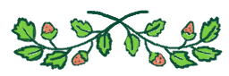

Welcome! 🐰
We're pleased to present to you the 1st launched bunny cafe in Sweden!
Our mission is to find loving lasting homes for abandoned pet rabbits
and also to provide education about these
often misunderstood critters.
The cafe is partnered up with several bunny rescue organizations
and the staff here work with great passion,
to pave the way towards a brighter future
for the 3rd most popular housepet in Sweden;
The pet rabbit. 🐇

At the cafe with its cozy interior you can sit, fika with
something tasty from our menu, enjoy idle chitchat with a friend.
Or simply finding peace in just existing.☕
There's a bunny Play-pen area where you can pay extra
to get to know the current residing bunnies at the cafe.
By giving them prepared treats provided from the staff,
you're sure to become their best pal.

Our bunnies are up for adoption so if you're intrested,
contact the staff or fill out the interest form provided on this website.
We do also offer a 'bunny speed-dating' program
for those looking for a new friend for their own rabbit.
If you're intrested in becoming a foster for a bunbun in need, you're very much welcomed to sign up for that as well.
All help that we can get is highly valued
and appreciated ~